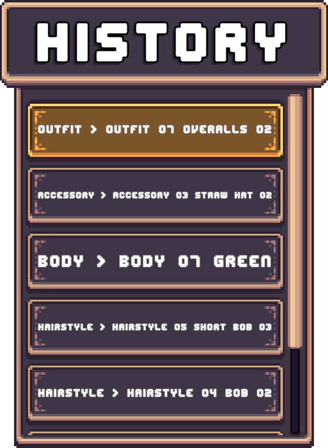

History Panels
A History Panel displays a list of snapshots recorded by the History Tracker.
These snapshots represent previous states of a character, allowing the player to:
- Review past changes.
- Revert to previous versions.
Panel Types
There are two primary types of History Panels. Both display a list of modifcations made to the character but show that information in different ways.
Text-Based Panels
A Text-Based Panel describes each snapshot using text.
- 1 Layer Changed > Displays the layer name and selected option.
- 2 Layers Changed > Displays both layer names.
- 3+ layers changed > Displays the number of layers modified.
Typical Layout: Vertical List.

Sprite-Based Panels
A Sprite-Based Panel visually represents each snapshot using character previews.
Each entry reconstructs the characters appearance at that point in time by taking a single frame from each spritesheet contained in the snapshot and combining them together.
Typical Layout: Horizontal List.
Preview Frame Setup
To define which frame is used for preview generation:
- Select your Layered Character Type asset and go to the Inspector window.
- Expand Character Creator Settings
- Locate Character Preview Settings
- Assign a Preview Sprite
Note
The Preview Sprite MUST be a sprite from the Base Spritesheet.
The rect of this sprite determines the frame extracted from every layer.
All extracted frames are combined to render the final preview.
Prefabs
Location: Prefabs > Character Creator > Modules > History > History Panels
Pre-Setup
Located in the Pre-Setup folder.
These panels are ready to use:
- Drag and drop into your Character Creation Menu.
- Assign a History Tracker.
You'll need to assign a History Tracker in order for the panel to be functional.
Don't have a History Tracker setup? Read here.
The History Tracker field can be found in the CCM History Panel component at the root of the prefab.

Entry Prefabs
Located in the History List Entries folder.
Included prefabs:
- History Panel Entry [Text]
- Displays a textual description of what changed in the snapshot.
- History Panel Entry [Sprite]
- Displays a collection of sprites with each sprite representing a layer of the character recorded in the snapshot.
These are the same prefabs used in the Pre-Setup History Panel prefabs.
Creating a History Panel
All History Panels use the CCM History Panel component to populate entries from snapshot data.
Setup Steps
- Create a new GameObject.
- Add the CCM History Panel component.
- Assign a History Tracker.
- Assign a List Parent.
- Assign an Entry Prefab.
Existing entry prefabs can be used or you can create your own entry prefab.
List Parent
The List Parent is the container where entries are instantiated.
A Vertical or Horintal Layout Group component can be used to automatically space entries.
Or a Scroll View can be used which provides a scrollable list which overflow handling.
The CCM History Panel component will instantiate entries as children of this GameObject, however it's up to you to decide how these entries will be layed out.
Panel Settings
| Setting | Description |
|---|---|
| Mode | Controls whether entries appear only when used or are always visible. |
| Newest On Top | If enabled, inserts new entries at the top of the list. If disabled, inserts new entries at the bottom. |
| Preload Pool | Number of entries pre-instantiated on menu initialization. |
Creating a History Panel Entry
Follow these steps to create your own History Panel entry from scratch:
Setup Steps
- Create a new GameObject.
- Add the History Panel Entry component.
- Set the Display Mode:
- Text > Requires a text reference.
- Sprite > Requires a sprite container reference (Parent GameObject).
- Text And Sprite > Requires Both.
- Add a
Togglecomponent. - Assign the
Togglereference in theHistory Panel Entrycomponent. - Add an
imagecomponent (This will be the entries background). - Set the Toggle Target Graphic to this Image.
Selection Highlight
- Create a child GameObject and name it (e.g. Highlight).
- Add an
Imagecomponent to it. - Give it the sprite you want to be shown when selected.
- Assign this image to the Toggle Graphic field.
Finalizing
- Drag the GameObject into the Project window to create a prefab.
- Assign it to the Entry Prefab field on your History Panel.
Tip
Confused? Check out one of the included entry prefabs to understand how they're set up.